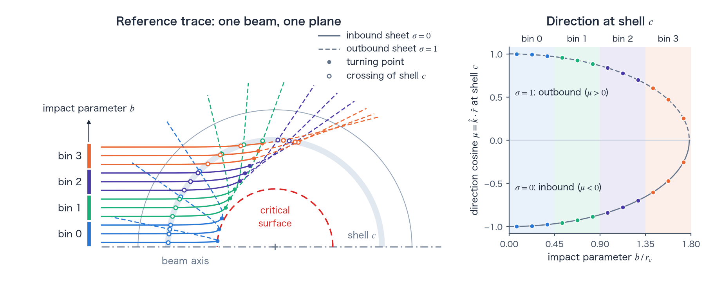
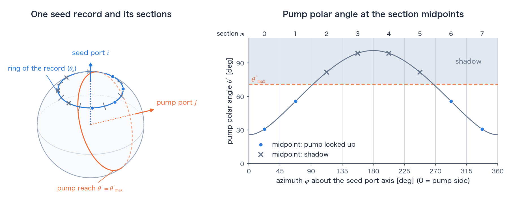
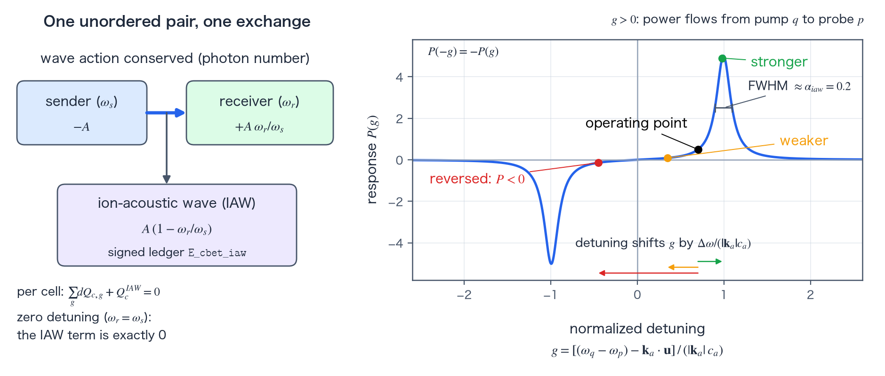

Cross-beam energy transfer (CBET) reference
TENRYU’s cross-beam energy transfer model redistributes laser power through the ion-acoustic wave driven where beams cross. In 1D spherical port_section mode, TENRYU traces one prototype beam and rotates its phase space onto the physical ports. This keeps the hydrodynamics spherically symmetric while representing the port layout, crossing angles, polarization average, wavelength detuning, and pump depletion for each beam pair. Pair exchange is conservative; detuned exchange closes optical wave action and a signed ion-acoustic-wave (IAW) ledger. CBET is stimulated Brillouin scattering in the strongly damped limit — the beat of two crossing beams ponderomotively drives an ion-acoustic wave, and the Doppler-shifted resonance decides how much power flows and in which direction. Terms specific to this calculation are defined in the terms section.
Physical mechanism
Two electromagnetic waves \((\omega_p,\mathbf{k}_p)\) and \((\omega_q,\mathbf{k}_q)\) crossing in the same plasma volume produce a beat: their ponderomotive force oscillates at the difference frequency \(\Delta\omega=\omega_q-\omega_p\) and beat wavevector \(\mathbf{k}_a=\mathbf{k}_q-\mathbf{k}_p\). This force drives an ion-density perturbation — an ion-acoustic wave. A periodic density modulation is also a refractive-index modulation, so the acoustic wave acts as a moving diffraction grating, and each beam Bragg-scatters off it. The scattered wave matches the other beam in direction and phase, so scattering off the resonantly driven grating transfers energy coherently from one beam to the other. This is the three-wave coupling of stimulated Brillouin scattering (SBS); it differs from ordinary SBS only in that the seed is the other beam rather than noise.
In a plasma flowing with velocity \(\mathbf{u}\), the beat seen by the ions is Doppler shifted; the natural response occurs when \(\Delta\omega-\mathbf{k}_a\cdot\mathbf{u}=\pm|\mathbf{k}_a|c_a\). The normalized detuning \(g\) (defined below) nondimensionalizes this condition: \(|g|=1\) is resonance. Two consequences familiar from direct drive follow: even equal-color beams (\(\Delta\omega=0\)) exchange strongly where the projected flow is sonic, \(\mathbf{k}_a\cdot\mathbf{u}=\mp|\mathbf{k}_a|c_a\) — the Mach-1 surface of the expanding corona — and imposed wavelength detuning \(\Delta\lambda\), the CBET mitigation knob, shifts the operating point along the response curve (Figure D).
The ion-acoustic response function \(P(g)\) (defined in the next section) is odd in \(g\), so the sign of \(g\) sets the direction: for \(g_{pq}>0\) power flows from pump \(q\) to probe \(p\); the beam that is blue-shifted in the frame moving with the plasma pumps the red-shifted one. In photon terms the exchange conserves wave action (photon number): the scattered photons keep their number but drop from \(\omega_s\) to \(\omega_r\), and the Manley–Rowe deficit \(1-\omega_r/\omega_s\) per unit power is deposited in the ion-acoustic wave. TENRYU books exactly this deficit in the signed IAW ledger (wave-action section below).
TENRYU evaluates the linear, steady-state, strongly damped local plane-wave limit of Marozas et al. [1], the form used by LLE's 2D hydrocode DRACO: the IAW is assumed slaved to its local drive — it does not propagate or store energy across cells — and this assumption justifies a local gain coefficient per crossing. The dimensionless damping \(\alpha_{iaw}=\nu_a/(|\mathbf{k}_a|c_a)\) (default 0.2, calibrated against the LILAC lineage — LLE's 1D hydrocode) sets the resonance width. Deliberately outside v1 — a recorded scope decision of the model's design — are ion-acoustic heating corrections of order \(|\Delta\omega|/\omega_0\), caustic corrections, speckle statistics, polarization dynamics, broadband drive, and a kinetic \(\nu_a(k)\).
Ion-acoustic gain model
When probe \(p\) and pump \(q\) cross the same plasma cell, TENRYU evaluates the dimensionless gain \(d\tau_{pq}\). The probe intensity grows as \(dI_p=d\tau_{pq}\,I_p\): \(d\tau_{pq}\) is the logarithmic gain \(d\ln I_p\), and in the linear (strongly damped, steady-state) model it is proportional to the pump intensity \(I_q\) and the path length \(ds\). The transferred power \(d\tau_{pq}\,I_p\) is proportional to both beam intensities; this bilinearity corresponds to the product \(L_{A,c}L_{B,c}\) in the pair-exchange formula \(\Delta P_{A\leftarrow B,c}=\chi\,L_{A,c}L_{B,c}/V_c\) below. With the roles swapped, \(d\tau_{qp}\) is proportional to \(I_p\). Temperatures are converted from eV to erg and the expression is evaluated in Gaussian cgs.
$$ d\tau_{pq}=\eta_{pol}\frac{\lambda_0 e^2}{c^3m_e} \frac{\hat n_e}{1-\hat n_e} \frac{\langle Z\rangle}{\langle Z\rangle T_e+3T_i} P(g_{pq})I_q\,ds, \qquad \eta_{pol}=\frac{f_{cbet}}{4}(1+\cos^2\psi). $$ $$ g_{pq}=\frac{(\omega_q-\omega_p)-\mathbf{k}_a\!\cdot\!\mathbf{u}} {|\mathbf{k}_a|c_a},\qquad P(g)=\frac{g\alpha_{iaw}}{(g\alpha_{iaw})^2+(1-g^2)^2}, \qquad \mathbf{k}_a=\mathbf{k}_q-\mathbf{k}_p. $$- \(\eta_{pol}=\tfrac{f_{cbet}}{4}[1+(\hat k_q\cdot\hat k_p)^2]\) — the polarization average for unpolarized/smoothed beams crossing at angle \(\psi\) (\(\cos\psi=\hat k_q\cdot\hat k_p\));
f_cbetabsorbs experimental calibration (DRACO uses 1.5; TENRYU default 1.0). - \(\lambda_0 e^2/(c^3 m_e)\) — the SBS coupling constant; the explicit \(\lambda_0\) expresses the familiar fact that longer-wavelength light suffers stronger CBET.
- \(\hat n_e/(1-\hat n_e)\) — density coupling \(\propto\hat n_e\) times the EM dielectric enhancement \(1/(1-\hat n_e)\) as the pair approaches critical density.
- \(\langle Z\rangle/(\langle Z\rangle T_e+3T_i)\) — since \(\langle Z\rangle T_e+3T_i=\bar m_i c_a^2\), this is the inverse acoustic stiffness: a hotter (faster-sound) plasma is harder to compress and responds less.
- \(P(g)\) — the absorptive part of the driven ion-acoustic oscillator with damping \(\alpha_{iaw}\): peaked near \(|g|\simeq 1\), FWHM \(\simeq\alpha_{iaw}\) in \(g\), and odd in \(g\).
- \(I_q\,ds\) — gain is linear in pump intensity and path length; pump depletion enters only through the outer iteration below, keeping each evaluation linear.
Everything is evaluated in Gaussian cgs with temperatures in erg (converted from eV); \(n_{crit}=m_e\omega_0^2/(4\pi e^2)\) gives \(9.06\times10^{21}\,\mathrm{cm^{-3}}\) at 351 nm and \(4.02\times10^{21}\,\mathrm{cm^{-3}}\) at 527 nm; the electron constants are shared with the laser package. The \(\hat n_e=n_e/n_{crit}\) in the gain formula is the electron density normalized to this critical density. \(c_a=[(\langle Z\rangle T_e+3T_i)/\bar m_i]^{1/2}\) with \(\bar m_i=A_{eff}m_p\); in 1T runs \(T_i=T_e\).
Terms used in this calculation
A 1D fluid carries only radial profiles, but the CBET gain depends strongly on the angle \(\psi\) at which the light of two beams crosses in a cell and on the beat wavenumber \(|\mathbf{k}_a|\) (gain model). TENRYU keeps this directional information by dividing the ray paths into the units below. These terms carry meanings specific to ray-based CBET calculations, and to TENRYU's implementation in particular, so they are defined here together.
Port, reference trace, and crossing
A port is an opening through which a beam of the laser facility enters the target chamber, together with its direction. The port table in Laser.port_configuration gives each port's direction, power weight, wavelength offset \(\Delta\lambda\), and related data. Studio's presets expand GXII to 12 ports, OMEGA to 60, and NIF to 192.
The reference trace is the set of rays of one representative beam traced in a single plane that contains the target center and the beam axis (Figure A, left). In a spherically symmetric plasma, rays with the same impact parameter (next subsection) coincide under rotations about the target center, so rotating this one trace onto each port's direction gives the ray paths of every port. Follett et al. [2] call such a set of rays with varying impact parameter a sector. Each ray of the reference trace stands for one ring about the beam axis (one annulus of the aperture).
A crossing, on this page, is one passage of one ray through one cell (a spherical shell in 1D), together with the record stored for that passage (its contents are listed in step 1). It does not mean two beams crossing each other: the overlap of two beams' light is represented by crossings of different states (defined below) that coexist in the same cell. A ray that turns passes each shell outside its turning point twice, once on the inbound side and once on the outbound side.
port_section is the CBET geometry treatment that uses the real port layout and the idea of the section ray tracing of Follett et al. [2]: it rotates the reference trace onto every port and evaluates the exchange for each pair of states. The default geometry_mode="legacy" (the legacy reduction below) does not use the port layout; it averages over the azimuth between two rays (next section). Studio writes only port_section.
Impact parameter and impact-parameter bin
The impact parameter is the distance between the target center and the ray's line when the ray is taken as a straight line without refraction. For a ray entering from vacuum it equals the Bouguer invariant \(B=n_{\rm refr}r\sin\alpha\), which is conserved along the path (\(\alpha\) is the angle between the ray and the radial direction; see Laser). For a given plasma profile, the impact parameter alone therefore fixes the radius at which the ray turns and the angle at which it crosses each shell: rays with a small impact parameter penetrate deep in a nearly radial direction, and rays with a large one turn farther out.
A 1D beam divides its aperture, on the launch plane (the plane perpendicular to the beam axis from which the rays are launched), into concentric annuli and launches one ray per annulus \(k=0,1,\dots,N_{ray}-1\) from the point at the annulus-center radius \(R_k=(k+1/2)\Delta R\) (the launch radius), along the straight line through the focus on the beam axis (\(N_{ray}\) is Laser.rays_per_beam; \(\Delta R\) is the aperture radius divided by \(N_{ray}\); see the terms section of Laser). The rays of the reference trace are the rays of the 1D laser trace. The impact parameter of a ray, the distance between its line and the target center, is \(b_k=|z_f|R_k/\sqrt{R_k^2+(Z_{init}-z_f)^2}\), which in general is not equal to the launch radius \(R_k\) (\(z_f\) is the position of the focus and \(Z_{init}\) the position of the launch plane; see Laser).
When the focus is not at the target center (\(z_f\neq0\)), \(b_k\) increases monotonically with \(k\), so the order of the ray index \(k\) is the order of impact parameter. When the focus is at the target center (\(z_f=0\)), every ray passes through the center, so \(b_k=0\) for all annuli, and the order of \(k\) is only the order of the launch radius (the order of the angle to the beam axis), not of the impact parameter. The port-section reconstruction uses the launch radius \(R_k\), not \(b_k\), as the distance of the ray from the beam axis, and starts the polar angle of the first node of the path (radius \(r_0\)) at \(\theta_0=\arcsin(R_k/r_0)\).
The impact-parameter bins divide the beam's rays, in the order of the ray index \(k\), into \(N_{bin}\) (Laser.cbet.n_impact_bins) groups of equal ray count: ray \(k\) belongs to bin \(a=\lfloor kN_{bin}/N_{ray}\rfloor\), so the bin depends only on \(k\). Bin 0 holds the rays near the beam axis and bin \(N_{bin}-1\) the rays at the edge of the aperture; when \(N_{bin}\) divides \(N_{ray}\), each bin is a band of equal width across the aperture (Figure A, left).
Rays are grouped by impact parameter for two reasons. First, the CBET coupling depends on the angle at which the light of two beams crosses, and rays that cross the same shell point in different directions when their impact parameters differ; lumping a beam's light into one quantity per cell would lose this spread. Rays of the same bin cross each shell in nearly the same direction (Figure A, right), so binning keeps the beam's directional spread at a resolution of \(N_{bin}\) steps. Second, the exchange in a cell is computed as one quantity per state (defined below) and shared among that state's crossings in proportion to their power times path length (step 5); a bin is therefore also the finest unit within which the exchange can differ from ray to ray. More bins raise the resolution but increase the number of states and pairs (tally groups and states). Studio's default is 4; a deck that does not set the key gets 16.

Sheet
A sheet is the part of a beam's ray family through which at most one ray passes each point in space. Seen in the space of ray positions and wavevectors \((\mathbf{x},\mathbf{k})\) (phase space), a beam's rays form one surface; a part of that surface that projects one-to-one onto position space is one sheet (Follett et al. [2]). The field a beam produces at a point is the sum of the contributions of its sheets, so CBET treats sheets as separate partners.
In a smooth, monotonic, spherically symmetric density profile, a beam splits into two sheets: the sheet of rays going in and the sheet of rays coming out after they turn. Inbound and outbound rays pass the same point in different directions (Figure A). The exact boundary between the two sheets is the caustic — the surface where neighboring rays cross and the ray-bundle area vanishes — which in general does not coincide with the turning point (the point of minimum radius). TENRYU splits each ray path at its turning point and calls the inbound part sheet \(\sigma=0\) and the outbound part sheet \(\sigma=1\). Between the turning point and the caustic the ray bundle degenerates and the field cannot be reconstructed reliably, so crossings in that interval are omitted from field evaluation (port-section section). Near a caustic the field amplitude derived from rays diverges; a widely used treatment, called the field limiter, caps that amplitude at the maximum of the analytic solution for a linear density gradient (an Airy function) [6], and LILAC uses it [2]. As its counterpart, the current version of TENRYU (v1) omits the crossings in that interval from field evaluation.
Tally groups and states
A tally group is the unit in which the crossings of rays are tallied per cell: a combination of beam \(b\), sheet \(\sigma\), and impact-parameter bin \(a\) (used by the legacy reduction; docs/NUMERICS.md §5.10.2 in the repository calls it an angle group). The crossings of one tally group are reduced per cell to one power line integral \(L_{g,c}\) and one power-weighted direction cosine \(\bar\mu_{g,c}\) (next section).
A state is the tally unit of port_section: a tally group with the beam replaced by a physical port, \(A=(i,\sigma,\beta)\) (port \(i\), sheet \(\sigma\), impact-parameter bin \(\beta\)). The reference trace holds the records of only one representative beam, so the states are made by copying those records with each port's power weight; for this reason they are also called expanded states. There are \(G=N_{port}\times2\times N_{bin}\) states, and the CBET exchange is evaluated once per unordered pair of states in each cell. There are \(G(G-1)/2\) pairs, and v1 allows at most 65536. For example, GXII (12 ports) with Studio's default \(N_{bin}=4\) has \(G=96\) states and 4560 pairs.
Sections, seed and pump, and shadow
The seed is the state of a pair \(\{A,B\}\) that supplies its own crossing records in the cell (position and direction) as sample points when the coupling coefficient of the pair is computed (step 3). TENRYU takes the lower-numbered state as the seed and uses the resulting coefficient for the exchange in both directions. These roles are computational: the sign of \(g\) decides which way power flows (physical mechanism).
The pump is the other state of the pair; it supplies its intensity and direction at the seed's sample points, interpolated from the reference-trace table. The pump's intensity and direction are interpolated from the crossings of all rays of its sheet (all bins), so the coupling coefficient does not depend on the pump's impact-parameter bin; the pump's bin enters only through \(L_{B,c}\) in the exchange formula.
A section is one of Laser.cbet.n_section_phi equal sectors of the azimuth \([0,2\pi)\) about the seed port's axis. The crossings of the reference trace are computed in one plane, but the beam is axisymmetric about its own axis, so one crossing record stands for every point of a ring about that axis. The pump arrives from another direction, so its intensity and direction vary around this ring. The ring is therefore divided into sections: the midpoint of each section is moved into the pump port's frame, its polar angle \(\theta'\) from the pump axis is computed, the pump table is interpolated at that angle, and the coupling coefficient is averaged over the sections (Figure B). Sections are not part of the state: there is one exchange per pair of states, and sections are used only inside the average of the coupling coefficient. The section ray tracing of Follett et al. [2] copies the set of rays at different azimuths about the beam axis to account for azimuthal differences; TENRYU applies the same idea at the midpoints of equal sections of the full azimuth.
The shadow is where the rays of the pump's sheet do not reach. When the polar angle \(\theta'\) of a section midpoint exceeds the largest polar angle \(\theta'_{\max}\) that the pump's reference-trace rays reach in the same shell and sheet, no pump light arrives at that point (the shadow region behind the caustic, in the words of Follett et al. [2]). Such sample points are removed from both the numerator and the denominator of the coupling coefficient's weighted average.

n_section_phi = 8). Left: the ring that one seed crossing record stands for (ray \(k=7\), at polar angle \(\theta_s\) from the seed port's axis) and the midpoints of its eight sections. The pump port is placed 63.4° from the seed port (the angle between neighboring vertices of an icosahedron). The orange circle joins the points at polar angle \(\theta'_{\max}\) from the pump axis; beyond it the rays of the pump's inbound sheet do not reach. Right: the pump polar angle \(\theta'\) at each section midpoint. Midpoints beyond \(\theta'_{\max}\) (crosses) are in the shadow and are removed from the average of the coupling coefficient.The 1D spherical reduction: tally groups and azimuthal quadrature
The legacy reduction groups the crossings of traced rays by tally group (beam \(b\), sheet \(\sigma\), and impact-parameter bin \(a\); see terms). The sheet is decided by the direction of the segment, \(\sigma=\mathbb{1}[\mu_{seg}>0]\) (1 on the outbound side), giving tally-group index \(g=b\,(2N_{bin})+\sigma N_{bin}+a\) — a bookkeeping index unrelated to the normalized detuning \(g\) of the gain model above. The segment direction cosine is the exact path average \(\mu_{seg}=(r_{stop}-r_{old})/\Delta s\) on the refracted trajectory. In cell \(c\), the per-cell tallies are the power line integral \(L_{g,c}=\sum P\Delta s\), intensity \(I_{g,c}=L_{g,c}/V_c\), and power-weighted direction cosine \(\bar\mu_{g,c}=\sum P\Delta s\mu/L_{g,c}\), with \(V_c\) the Lagrangian cell volume at the trace snapshot.
$$ \cos\psi(\varphi)=\bar\mu_p\bar\mu_q+s_ps_q\cos\varphi,\quad s=\sqrt{1-\bar\mu^2},\qquad |\mathbf{k}_a|(\varphi)=\bar k\sqrt{2(1-\cos\psi)},\quad \bar k=n_r\omega_0/c, $$ $$ \mathbf{k}_a\cdot\mathbf{u}=\bar k\,u_r(\bar\mu_q-\bar\mu_p)\ \ (\varphi\text{-independent}),\qquad \langle P\cdot pol\rangle_\varphi=\frac{1}{N_\varphi}\sum_k\frac{1+\cos^2\psi(\varphi_k)}{4}\,P(g(\varphi_k)). $$Here \(\varphi\) is the relative azimuth between the two rays' planes (each the plane that contains a ray's path and the target center; in a spherically symmetric field a ray never leaves its plane), \(s_p,s_q\) are the sines of the tally direction cosines \(\bar\mu_p,\bar\mu_q\), \(\bar k=n_r\omega_0/c\) is the local optical wavenumber, and \(\langle P\cdot pol\rangle_\varphi\) is the azimuthal midpoint average of response times polarization factor that enters the pair coupling.
A 1D fluid does not resolve the relative azimuth \(\varphi\) between two ray planes, so the pair kinematics are averaged by midpoint quadrature over \(\varphi\) — averaging \(P(g)\), never the nonlinear substitute \(P(\langle g\rangle)\). The radial flow enters through \(\mathbf{k}_a\cdot\mathbf{u}=\bar k u_r(\bar\mu_q-\bar\mu_p)\), which is exact and \(\varphi\)-independent. The resonance FWHM is \(\simeq\alpha_{iaw}\), and the midpoint quadrature resolves it when \(\max_k|g(\varphi_{k+1})-g(\varphi_k)|\lesssim\alpha_{iaw}/4\); configurations with much smaller alpha_iaw need a larger n_phi (the number of azimuthal midpoints).
Cells at or above ne_frac_cutoff (default 0.95), void cells (the void cells outside the target; see void materials), and cells with any non-finite state (\(\rho,\bar Z,A_{eff},T_e,T_i,u_r,V_c\)) are excluded; \(u_r\) is the cell-average node velocity. A node with \(|\mathbf{k}_a|/\bar k<\)k_a_floor has no beat wave and contributes zero. The gain prefactor and \(\bar k\) bound \(1-\hat n\) from below by the same absorption.eps_n as IB, and config validation enforces ne_frac_cutoff \(\le 1-\)eps_n so the floor can never silently saturate gain inside the active band. port_section replaces that unresolved average with the rotation of the reference trace onto each port and an average over sections (terms).
Port-section reconstruction from one trace
The reference trace (Figure C) retains radius, direction cosine \(\mu\), path length \(ds\), sheet, and impact bin at each cell crossing. Polar angle is reconstructed by Simpson accumulation of \(\sqrt{1-\mu^2}/r\); neighboring rays define a finite bundle area. Sheets switch at turning points. The phase-space fold of a ray family is the caustic — the envelope where the ray bundle's cross-section vanishes — and it does not in general coincide with the turning point. In the band between the turning point and the caustic the ray bundle degenerates and the field reconstruction is unreliable, so crossings in this interval are omitted from field evaluation (the counterpart of the field limiter; see the sheet subsection). When the inverse rotation of a seed sample point into the pump-port frame lands in the shadow beyond the largest polar angle that the pump's reference-trace rays reach (see sections and shadow), that sample is removed from both the numerator and the denominator of the coupling coefficient's weighted average (the formula in the next section).

An expanded state (see terms) is \(A=(i,\sigma,\beta)\): port, sheet, and impact-parameter bin. The section \(m\) is not part of the state; the coupling coefficient (next section) sums over it. Reference records are initialized with each port’s power weight, then tallied and propagated in canonical port-ID order (ascending port_id of the port table). Because this order is fixed, reordering the rows of the port table leaves the result bitwise unchanged. In each cell, every unordered pair \(\{A,B\}\) is evaluated once and applied with opposite signs. There is no \(N(N-1)/2\) normalization. Splitting one physical beam into two coincident, equal-color ports must leave the solution unchanged; this beam-splitting invariance fixes the convention. Different sheets of the same port are also legitimate pairs.
Computational details: the polar angle along each reference-trace ray is reconstructed by Simpson accumulation of \(\sqrt{1-\mu^2}/r\) per record interval; the finite bundle area of neighboring rays follows the discrete ray-bundle-area form of Follett et al. [2] (their Eq. (10)); the pump lookup inversely rotates each seed sample point into the pump-port frame (the rotation of Follett et al.'s Eq. (21) [2]) and linearly interpolates the pump's (shell, sheet, \(\theta'\)) table. For each shell and sheet, that table lists the crossings of the reference trace in order of polar angle and includes the crossings of every impact-parameter bin. Shadow samples are removed from numerator and denominator alike, while below-floor \(|\mathbf{k}_a|\) keeps the denominator (diluting, not renormalizing, the pair). v1 bounds the expanded pair count at 65536 — GXII-scale port sets run now; OMEGA/NIF-scale sets are a documented extension.
One CBET solve, step by step
Record. With CBET on, the trace kernel runs in record mode and stores, per ray, one entry per cell crossing: \(\{c,\mu,\Delta s,S,w\}\), where \(S\) is the IB optical depth summed over the crossing (trapezoidal in the ray march, by quadrature in the 1D default characteristic integration; see Laser) and \(w\) is the ray's power at the crossing in this IB-only trace — the seed of the first iteration's tally in step 5. Critical-layer tail closure is stored as a terminal record with \(\Delta s=0,\ S=\tau_{tail}\) (the remaining optical depth of the analytically closed near-critical tail — see Laser). Capacity overflow is a hard error (a silently truncated path would pump tallies while quietly moving IB absorption into “unabsorbed”).
Tally. Per tally group (state in
port_section) and cell, \(L,\bar\mu,\Delta s^{max}\) are accumulated by fixed-order sequential sums over sorted segments (no floating-point atomics anywhere in the solve — the result is run-to-run bit-stable on a given build+device).-
Couple. The coupling table is evaluated once per cell and unordered pair. In
$$ \chi^{ps}_{c,\{A,B\}}=\chi_{pref}(c) \frac{\sum_x\sum_m \hat w_A(x)\hat I_B(x,m)\eta_{pol}P(g)} {\sum_x\sum_m \hat w_A(x)\hat I_B(x,m)},\qquad \Delta P_{A\leftarrow B,c}=\chi^{ps}_{c,\{A,B\}}\frac{L_{A,c}L_{B,c}}{V_c}. $$port_sectionthis happens once, before iteration: the geometry comes from the phase-space table and does not depend on the iterating \(L\), so \(\chi^{ps}\) is iteration-invariant. The legacy reduction instead re-evaluates \(\chi\) at each pass of step 5, because its power-weighted directions \(\bar\mu\) move with \(L\).In the coupling table, \(x\) indexes the crossing records that seed state \(A\) has in the cell, \(m\) the section, \(\hat w_A(x)\) the seed record's normalized power weight (summing to one), \(\hat I_B(x,m)\) the pump intensity interpolated from the pump's table at the midpoint of section \(m\) on the ring that record \(x\) stands for, after the inverse rotation into the pump-port frame (see sections, seed and pump, and shadow), and \(\chi_{pref}(c)\) the cell's gain prefactor — every factor of the gain increment \(d\tau\) above except \(P(g)\,\eta_{pol}\,I_q\,ds\), which the weighted average supplies. The production device path forms the sums with one warp (32 threads) per (cell, seed state, pump port) and uses no floating-point atomics; because the coupling coefficient does not depend on the pump's impact-parameter bin, the sums formed for the pump port's two sheets serve every pair with that port's states. A reference kernel that assigns one thread to each \((cell,pair)\) is kept for the tests and gives bit-identical coefficients. A reusable GPU workspace retains port frames, frequencies, pair tables, and readback capacity; the host implementation remains as a tolerance-gated reference. The antisymmetry is mechanical: \(g_{qp}=-g_{pq}\) holds exactly in floating point and \(P(g)\) is an FP-odd function; the implementation additionally evaluates \(\chi\) once per pair and rounds the applied product in a canonical (min,max) operand order on both sides, so the pair exchange is bitwise antisymmetric by construction, not just to rounding error.
Cap. The cap is two-stage flux limiting on each group’s total loss \(\ell_{g,c}\). A donor cap (the donor is the state that loses power) prevents strong coupling from making a ray negative. For group \(g\), \(f_g=\min[1,\theta L_g/(\Delta s_g^{max}\ell_g)]\), where \(\theta\) is
theta_capand \(\Delta s_g^{max}\) is the group's largest single-crossing path length in the cell (so the bound applies per crossing, not per cell total); the pair receives \(\min(f_A,f_B)\). Applying the same factor on both sides preserves antisymmetry and limits relative loss per crossing totheta_cap.-
Propagate and iterate. The quantity the solve must make self-consistent — and the one whose convergence is tested — is the intensity field the beams present to one another: discretely, the per-cell, per-group tallies \(L_{g,c}\) of step 2. Each pair's exchange needs both partners' local powers, but those powers must themselves already include IB absorption and every upstream CBET exchange along each ray. TENRYU closes this circular dependence with an undamped fixed-point (Picard) iteration on \(L\). Pass \(m\) does the following, in order:
- Tally. Form \(L^{(m)}_{g,c}\) from the ray powers of pass \(m-1\); the first pass tallies the IB-only recording trace, i.e. the field before any CBET.
- Exchange. From those tallies, evaluate every pair's \(\Delta P_{A\leftarrow B,c}=\chi\,L^{(m)}_AL^{(m)}_B/V_c\) — this is where pump depletion enters, since a partner weakened in the previous pass now offers a smaller \(L\) — re-apply the donor caps of step 4, and reduce the pair exchanges to each cell's net ledger \(dQ_{g,c}=\sum_q\Delta P^{final}\). In
port_sectionthe geometric \(\chi^{ps}\) is iteration-invariant; the legacy reduction re-evaluates \(\chi\) here because its power-weighted directions \(\bar\mu\) move with \(L\). - Test. Convergence is the relative L1 change of the tallies, \(\sum_{g,c}|L^{(m)}_{g,c}-L^{(m-1)}_{g,c}|\,\big/\sum_{g,c}L^{(m-1)}_{g,c}<{}\)
tol(default 1e-3,max_iters50). - Re-propagate. If unconverged, every ray is propagated again from its launch power \(P_0\) — not from the previous pass's endpoint — applying at each crossing IB-half, its share of the cell's net exchange, IB-half:
A crossing's share of \(dQ_{g,c}\) is its previous-generation tally fraction \(w^{(m-1)}\Delta s/L^{(m-1)}_{g,c}\); those fractions sum to one by construction (\(\sum_j w_j\Delta s_j=L\)), so the power applied along rays sums exactly to the ledger \(dQ\). There is no under-relaxation or adjustable damping: each pass simply replaces the intensity field with the one that a complete, consistent propagation produces under the latest exchange field — plain Picard substitution, with the step-4 caps bounding how far any single pass can move — and the post-CBET powers become generation \(m\)'s tally weights for the next pass (a generation is the pass whose propagation produced the weights). The final pass (the last propagation after convergence, which fixes deposition and unabsorbed power) deposits with matched \(dQ\)/\(w\) generations — a generation mismatch would silently break conservation, and the analytic slab test gates this matching.
Positivity and ledgers. Intermediate iterations treat any clamp (resetting a negative power to zero) as a positivity projection and only count it; the physical gate is that the final pass injects zero clamped power. The step then audits the ledger \(P_{in}=P_{dep}+P_{unabs}+\Sigma_{applied}\). \(\Sigma_{applied}\) is the sum of all applied pair exchanges; since each exchange is exactly antisymmetric it is ideally zero, and in practice it closes at the accumulated-rounding level \(O(N\varepsilon)\) (measured \(\lesssim10^{-12}\) relative). CBET never heats matter directly — only IB deposits energy; exchanged power just re-routes which rays carry it. Deposition and unabsorbed power flow into the ordinary per-beam fixed-order reductions.
The final pass records deposition and unabsorbed power, then writes the exchanged power back along the original trajectories for visualization. Per-beam power rescaling when a trace is skipped and the previous one reused (the reuse cache of Laser, Laser.raytrace_skip) is exact for linear IB but not for nonlinear CBET, so with CBET on, a retrace is also triggered when any beam’s power changes by more than 1% from the cached value.
Wavelength detuning and wave action
Each port carries \(\Delta\lambda_b\), with \(\omega_b=2\pi c/(\lambda_0+\Delta\lambda_b)\). In v1, trajectories, \(|\mathbf{k}|\), and \(n_{crit}\) remain frozen at common \(\lambda_0\); detuning affects only the resonance. The quantities being frozen shift only at relative order \(\Delta\lambda/\lambda_0\) (\(n_{crit}\propto\lambda^{-2}\) moves by \(2\Delta\lambda/\lambda_0\approx6\times10^{-4}\) for a 0.1 nm split at 351 nm), so sub-nanometre GXII/OMEGA-scale detunings sit well inside the approximation; multi-ångström NIF-scale splits are the recorded caveat below. Studio’s port wavelength split assigns alternating \(+\Delta\lambda/2\) and \(-\Delta\lambda/2\) in canonical port order.

At unequal frequencies an equal-power exchange would create photons: what is conserved in the three-wave process is wave action (photon number, the Manley–Rowe relations). If the sender loses power \(A\) at \(\omega_s\), the receiver gains \(A(\omega_r/\omega_s)\) at \(\omega_r\), and the Manley–Rowe deficit \(A(1-\omega_r/\omega_s)\) is the power fed to the ion-acoustic wave; TENRYU enters it once per exchange in the signed ledger E_cbet_iaw. Every cell asserts \(\sum_g dQ_{c,g}+Q_c^{IAW}=0\). At zero detuning, finite \(\omega/\omega\) is exactly one: receiver gain is bitwise identical to the neutral path and the IAW term is exactly 0.0.
Namelist controls
These are Studio’s principal port_section values. Studio does not generate legacy CBET decks; these are generation defaults, not the low-level parser’s general defaults.
| Key | Default | Purpose |
|---|---|---|
Laser.cbet.enable | False | Master switch (the key is enable, not enabled); enabling it in Studio emits geometry_mode="port_section". |
f_cbet | 1.0 | Polarization-average and calibration factor. |
alpha_iaw | 0.2 | Dimensionless IAW damping rate. |
theta_cap | 0.3 | Maximum relative donor loss per crossing. |
tol | 1e-3 | Relative L1 Picard convergence threshold. |
max_iters | 50 | Maximum Picard iterations. |
n_impact_bins | 4 | Number of impact-parameter bins \(N_{bin}\) (terms): the beam's rays, in order of impact parameter, are split into groups of equal ray count. |
n_section_phi | 8 | Number of sections (terms): the azimuth \([0,2\pi)\) about the seed port's axis is cut into equal sections, and the pump is looked up at each section's midpoint. |
| Beam arrangement preset | gxii | gxii, omega, and nif expand to 12, 60, and 192 ports (a Studio setting, written to the deck as the Laser.port_configuration port table). |
| Port wavelength split [nm] | 0.0 | Alternating \(+\Delta\lambda/2,-\Delta\lambda/2\) by canonical port order (a Studio setting, written to the deck as each port's delta_lambda_nm). |
ne_frac_cutoff | 0.95 | Excludes cells at or above this \(n_e/n_{crit}\). |
k_a_floor | 1e-6 | Zeros the contribution of nodes below this \(|\mathbf{k}_a|/\bar k\). |
The current port_section mode requires 1D spherical geometry, one prototype trace, and one MPI rank. The expanded-pair limit constrains the combination of port count and impact-parameter bins. NIF-scale (multi-ångström) detuning also requires a per-color explicit-trace comparison because v1 uses common-wavelength trajectories; the frozen-trajectory error grows with \(\Delta\lambda/\lambda_0\) as quantified in the detuning section above.
Verification
- Analytic two-beam gates: the co-propagating slab problem follows the bilinear coupling \(dI_2/ds=\gamma I_1I_2\) at constant \(I_1+I_2=I_{tot}\) and has the closed-form logistic solution \(I_2(s)=I_{tot}/(1+Ce^{-\gamma I_{tot}s})\), where \(\gamma\) is the constant gain coefficient of the uniform slab and \(C\) the integration constant fixed by the inlet intensities;
test_cbet_slabholds the discrete solve to relative error \(<10^{-3}\) against it (measured \(\sim7\times10^{-5}\)) with first-order \(ds\) convergence, pairwise ledger \(\le10^{-13}\), and the clamp identity under stressed caps;test_cbet_spherecloses \(|P_{in}-P_{dep}-P_{unabs}|/P_{in}\le10^{-4}\) (measured \(\sim10^{-12}\)) on a synthetic corona. - Beam-splitting invariance: one weight-1 port equals two coincident, equal-color weight-0.5 ports.
- Explicit-N references: 2-, 12-, and 60-beam cases are compared with the legacy reduction solved with every beam as a separate beam (the explicit-N reference) and require \(E_{abs}\) within 1%, \(Q_{abs}(r)\) L2 within 2%, and per-port outgoing power within 3%.
- Section convergence:
n_section_phi= 8, 16, and 32 must converge monotonically toward the 64-section solution. - Zero-detuning neutrality: receiver power remains bitwise neutral and
E_cbet_iawis exactly zero. - Wave-action closure: per-cell \(\sum_g dQ_{c,g}+Q_c^{IAW}=0\) and global laser ledgers are assertion-gated.
References
- J. A. Marozas et al., "Wavelength-Detuning Cross-Beam Energy Transfer Mitigation Scheme for Direct Drive: Modeling and Evidence from National Ignition Facility Implosions," Phys. Plasmas 25, 056314 (2018). doi:10.1063/1.5022181
- R. K. Follett et al., "Modeling Cross-Beam Energy Transfer with Sector Ray Tracing," Phys. Plasmas 32, 022709 (2025). doi:10.1063/5.0253858
- W. L. Kruer, S. C. Wilks, B. B. Afeyan, and R. K. Kirkwood, "Energy transfer between crossing laser beams," Phys. Plasmas 3, 382–385 (1996). doi:10.1063/1.871863
- P. Michel et al., "Energy transfer between laser beams crossing in ignition hohlraums," Phys. Plasmas 16, 042702 (2009). doi:10.1063/1.3103788
- I. V. Igumenshchev et al., "Crossed-beam energy transfer in implosion experiments on OMEGA," Phys. Plasmas 17, 122708 (2010). doi:10.1063/1.3532817
- R. K. Follett et al., "Validation of ray-based cross-beam energy transfer models," Phys. Plasmas 29, 113902 (2022). doi:10.1063/5.0123462